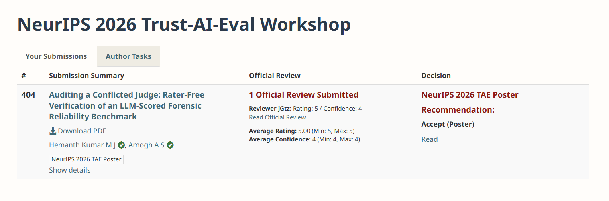
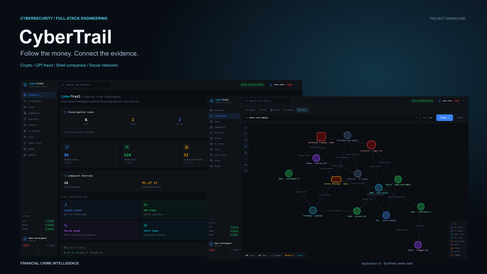
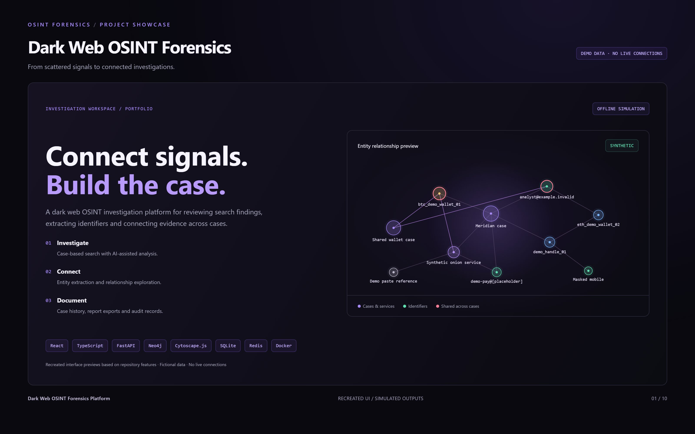
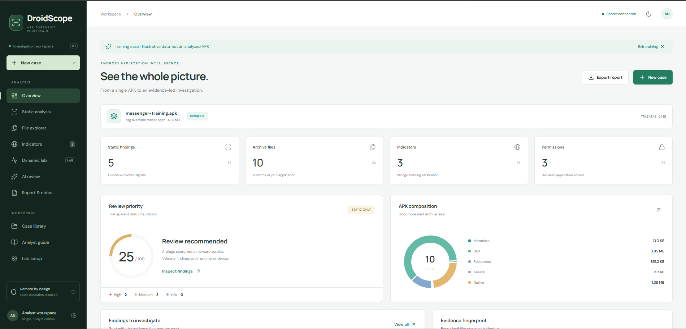
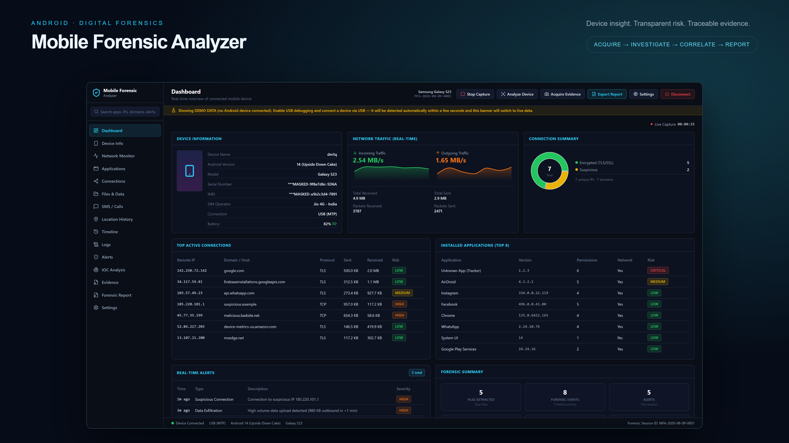
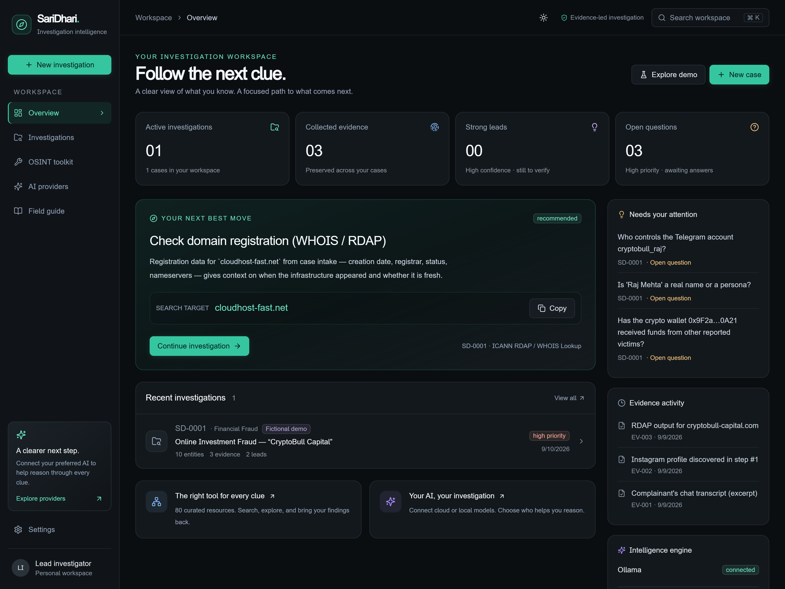
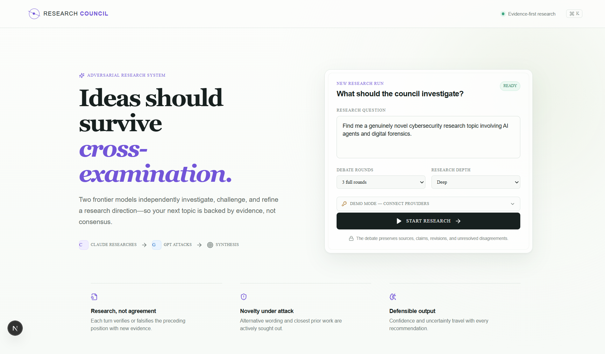
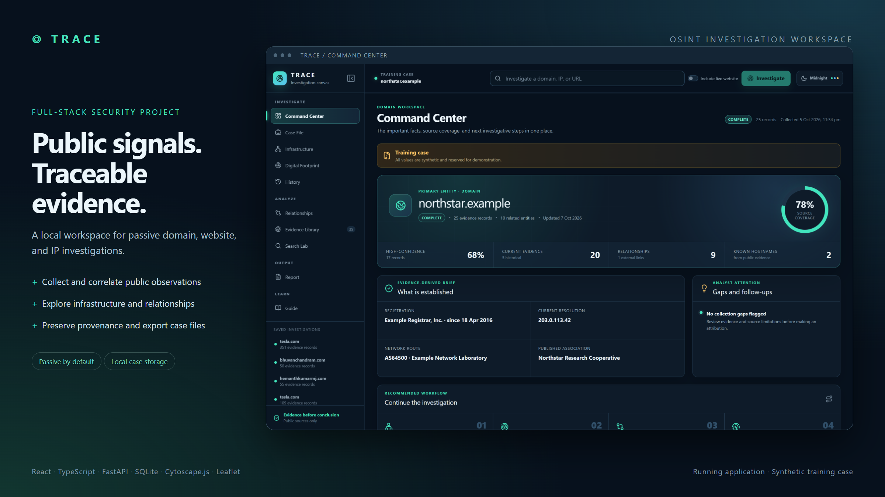

NeurIPS 2026: accepted poster
Sharing the acceptance of our independent research with Amogh A S at the Trust-AI-Eval Workshop, exploring LLM-based evaluation and forensic reliability.
Trustworthy AI · Digital forensicsRead post on LinkedInEngineer by practice. Researcher by curiosity.
Security engineer & independent researcher
My research explores security fundamentals, information security, and data privacy across application security, AI and LLM security, and digital forensics - investigating how systems fail and building tools to make the evidence clearer.
STILL A LEARNERTrying to be a unique worm in security research - following my curiosity, questioning assumptions, and building an approach of my own.
Selected post summaries from my research and security work.

Sharing the acceptance of our independent research with Amogh A S at the Trust-AI-Eval Workshop, exploring LLM-based evaluation and forensic reliability.
Trustworthy AI · Digital forensicsRead post on LinkedInAn update from our research presentation at IISc Bengaluru: examining dark web service disruptions and what externally observable downtime can reveal.
Dark web OSINT · Threat intelligenceRead post on LinkedInObservations from testing a suspicious Telegram conversation, with practical reminders to protect personal information and verify who is on the other side.
AI security · Online safetyRead post on LinkedInSharing recognition for reporting vulnerabilities affecting a government website, including exposed logs, session information, and database credentials.
Vulnerability research · DisclosureRead post on LinkedInA short update celebrating Hall of Fame recognition from NASA for responsible vulnerability disclosure.
Application security · Hall of FameRead post on LinkedInSwipe, scroll, or use the arrows to explore.
All activity on LinkedInIndependent, first-author work exploring the reliability of automated judgments, the limits of observable evidence, and resilient security.
Investigating the reliability of LLM-based forensic evaluation and the role of independently verifiable checks, including limitations in automated judging.
Read on OpenReviewA separate study extending our investigation of LLM-based forensic evaluation, building on the research direction of our NeurIPS Trust-AI-Eval poster.
Examining temporal change and content similarity to study service disruptions, while making uncertainty and alternative explanations explicit.
Exploring post-quantum cryptographic approaches to the security of distributed computing systems.
The publisher intends to include this contribution in Distributed Computing and Communication Systems – Proceedings of ICDCCS-2025, under the Springer imprint.
Co-authored independent research. The NeurIPS Trust-AI-Eval poster and the separate WLLFM research paper are accepted; their December 2026 presentations are forthcoming.
Tools for investigators, analysts, and researchers - built around traceability, human review, and practical security workflows.
Working proofs of conceptThese projects are code-based tools developed and run on my own systems. The galleries include screenshots captured while running the tools, alongside some AI-generated or illustrative images. Sample and demo data are used to protect privacy.Contact me to discuss these projects

Connecting cryptocurrency flows, UPI transaction chains, and corporate entities for financial crime investigation.

A case-based investigation workspace for entity extraction, AI-assisted analysis, relationship graphs, and evidence exports.

Static APK inspection and disposable cloud Android execution, with persistent case evidence and opt-in AI review.

Evidence-aware Android acquisition that separates observed facts, interpretations, and possible indicators.

Guided investigation intelligence: from unstructured case narratives to reviewable leads and source-linked graphs.

An adversarial research workspace where sequential Claude–GPT debates test novelty and refine research proposals.

A local OSINT workspace that turns public signals into traceable evidence, interactive relationship graphs, and exportable case reports.
Showing all 7 selected projects
Outside my work at Deloitte, I spend time hunting for potential CVEs and investigating business logic flaws in web applications, APIs, and open-source software. I’ve also reported vulnerabilities in blockchain and Web3 applications. Each investigation is a chance to learn more about root causes, test my understanding, and work with maintainers through responsible disclosure.
From my responsible disclosure work with these and other organizations.
My work connects production engineering, application security, and tools that support real investigative workflows.
Software engineering
↓ Application security
↓ Research & investigative tooling
Application security across web applications, APIs, AI-enabled systems, and desktop applications.
Office recognition for security testing, collaboration, and contributions across teams.
Technical assistance and knowledge-sharing in support of local cybercrime investigation activities.
Selected through a competitive process for a government-backed cybersecurity internship focused on law-enforcement initiatives.
Production frontend engineering with a gradual transition into security-focused work.
Compiler concepts applied to a practical source-to-source translation problem.
An early foundation in enterprise identity, secure development, and application security testing.
I’m still learning, and I’m drawn to questions I can investigate for myself: what a system actually does, what the evidence supports, and where my assumptions break. I try to develop my own approach by building, testing, and reflecting on what I find.
Outside office hours, I build personal security projects and explore data privacy and LLM security. These are ongoing learning efforts, shaped by my own questions and experiments. Through graduate study, I hope to strengthen the theoretical and experimental foundations behind this work.
Beyond technical work, I have volunteered with UniFly Collective on school health-awareness initiatives and supported a CSR visit with the Association for the Mentally Challenged.
Tools I use, foundations I’m building on, and topics I’m continuing to learn.
Coursework and professional training in security, cryptography, investigation, and engineering. Explore the linked credentials below.
Want to discuss anything about security? Connect with me on LinkedIn. I’m happy to exchange ideas on research, application security, AI reliability, and digital investigation.